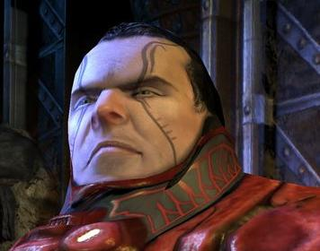
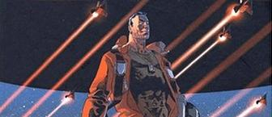
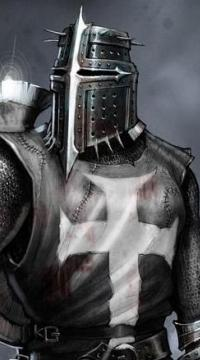
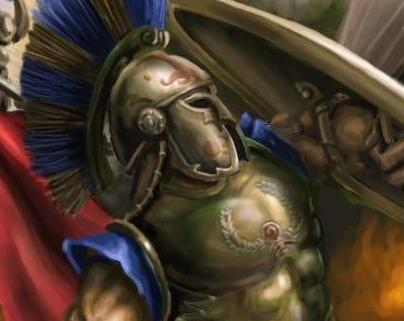

| Profil | |
|---|---|
 | |
| Origine | Eveil |
| Age | 32 ans |
| Sexe | Homme |
| Profil | Guilde |
| Coalitions | |
| Les Apolystes (Directeur économique) | |
| Argyre (Premier Gouverneur) | |


Elle est pas clinquante, cette belle petite gueule de dirigeant comme on les aime? Un profil trois-quarts, un beau col tout rouge supposant une grosse armure virile, le regard assuré et porté vers le lointain, le long nez de la destinée... et une vague calvitie, soulignant avec distinction la sagesse du personnage sans pour autant le départir de son charme.
Dans ces conditions, comprenez qu'on vous la présente deux fois. Décidément, tout est fait pour le plaisir du lecteur. On vous donne les deux versions: avec les pixels et sans les pixels. Franchement, on vous gâte.
Trop la classe, tout ça. On en oublierait presque la véritable raison d'être de ce document d'archives: donner un aperçu de la vie de Stanislas Kraegor, celui qui resta dans l'histoire d'Eveil comme le plus gros enfoiré prétentieux, belliqueux et assoiffé de puissance qu'on connut jamais.
L’histoire de Stanislas Kraegor, gouverneur dominant de l’instable Union Europaïenne, est parsemée d’espaces vides et d’incertitudes. Les modalités précises de son accession à la tête du principal Etat fédéré d’Europa, la Françonnie, sont peu connues : on sait qu’elle est consécutive à des élections classiques pour la mise en place d’un gouverneur, mais sa victoire à plus de 80% des suffrages laisse un doute quant à la parfaite légalité dudit suffrage. Quoiqu’il en soit, le contrôle de la Françonnie était la condition sine qua non à l’établissement de l’hégémonie de Kraegor sur la totalité de la planète Europa, hégémonie qui fut réalisée aux alentours de fin septembre 307.
La naissance d'un Empire.

La suite est plus connue des historiens et ne mérite pas qu’on s’y attarde outre mesure. La découverte par Europa des technologies de voyage extra-systémique, puis extra-sectoriel, fut le point de départ d’une expansion coloniale qui connut peu d’égales dans la galaxie Eveil. En quelques semaines, grâce à des escadrons sans cesse renouvelés de vaisseaux diplomatiques, Stanislas Kraegor avait fait tomber sous son contrôle plus d’une centaine de planètes et établi un empire colonial s’étendant dans les secteurs 0, 1 et 4.

Parallèlement, Il avait intégré Europa à la société galactique en s’alliant à la coalition des Apolystes, principale alliance du secteur 4 et deuxième puissance d’Eveil. Ce qu’apporta à Kraegor l’amitié du commandant Eruld, fondateur des Apolystes, et les origines de la haine tenace qu’il voue encore aux commandants Rivain Laplace et Pioupiou, sont bien connus et inutiles à rappeler.
Plus intéressantes sont les circonstances de son entrée au gouvernement de Pendragon, après l’exil de Katradhan et tandis que la puissance apolyste était sur le déclin. Les relations toujours ambiguës que Kraegor entretint par la suite avec Avalon trouvent leurs racines dans cette période. Tout d’abord, il est à noter que jamais Stanislas Kraegor, après son intervention insultante (voir ici) contre Pendragon à l’Assemblée Galactique, n’espéra faire partie de son staff gouvernemental. C’est sans espoir aucun, et pour tester l’état de ses relations avec ce qui devenait LA puissance d’Eveil, qu’il proposa ses services à Pendragon. Quelle ne fut donc pas sa surprise quand celui-ci accepta de lui confier un poste de conseiller en matière économique et commerciale.
La tâche était ardue, et le travail ne manquait pas. Après le départ de Katradhan, il fallait redistribuer les planètes de contrebande aux natifs des secteurs, ce qui n’était pas une mince affaire tant certains possesseurs anciennement choisis par Katradhan tenaient à leur bout de marché. Avalon eut l’intelligence, plutôt que de s’engager dans une coûteuse guerre de reconquête, de rallier à elle ces anciens gouverneurs pour mieux les contrôler. Dans l’ensemble, la récupération des contrebandes fut un succès, seul le secteur 6 posa problème en définitive. Parallèlement, la négociation quant à la nomination des nouveaux postes de gouverneurs


des contrebandes se fit entre les Apolystes et le gouvernement avalonien. On mit en place un semblant de démocratie représentative dans les secteurs, système totalement inadapté à la morphologie de la société galactique mais particulièrement populaire.
C’est dans ce contexte, vers décembre-janvier 308, que s’opéra la montée en puissance de Stanislas Kraegor. Tout d’abord, il se constitua lui-même une clientèle en récupérant ce que les Apolystes avaient rassemblé de mieux, notamment le commandant Yersin dont il fit son fédéré attitré, et qu’il envoya guerroyer contre Rivain Laplace, livrant ainsi une guerre par personnes interposées à Pendragon. De cette expérience, il apprit qu’il était possible à un commandant moyennement puissant de défier Avalon, qui comptait alors en son sein beaucoup de ressources mais peu de talent. Evidemment, l’extermination de


Rivain fut empêchée par Pendragon, mais ce dernier ne réussit jamais à réduire complètement Yersin, alors que ce dernier disposait de trois à quatre fois moins de ressources.
Ensuite, il profita du vide institutionnel dans lequel Avalon se complaisait pour rafler des attributions au sein de gouvernement. De simple conseiller, il devint responsable des taxes, puis des gouverneurs eux-mêmes, puis de la totalité de la gestion économique gouvernementale. Son dynamisme entraînant et son charisme exceptionnel lui permirent de devenir sinon populaire, du moins craint et respecté dans la communauté d’Eveil, voire parfois profondément haï par ceux qu’il gratifiait de sa condescendance. En effet, avec le succès, Kraegor devint arrogant, prétentieux et intolérant. Un homme de pouvoir accompli et efficace face à une société de commandants démocrates bêlants et à peine capables de gérer leurs propres secteurs natals. Côtoyer la médiocrité a toujours rendu aigris les hommes talentueux.
Gouvernant mais isolé.
On pense que c’est de cette période que naquit ce qui allait faire de Stanislas Kraegor un commandant dangereux. Du haut de son poste, il observait Eveil et concevait une immense colère de ce qu’il en voyait, à savoir un tas de faux chefs d’Etat imbus de démocratie mièvre, niais au possible et souvent tout juste dignes d’intervenir à l’Assemblée Galactique. Il assistait également à la déliquescence des Apolystes qui, sous l’influence du commandant Tiz notamment, s’étaient trouvés envahis de personnages médiocres et

inutiles réclamant la démocratie entre coalisés, prônant donc l’inefficacité institutionnalisée. Devant tant d’incompétence, Kraegor conclut que la démocratie entre commandants était impossible. Il devait y avoir un pouvoir fort, central et dictatorial pour mener les sous-hommes, et peut-être même les exterminer. Car un territoire entre les mains d’un médiocre est un territoire perdu pour Eveil. Et la conscience de la présence d’Espoir, à des milliards d’années-lumière de là, lui conférait un sens aigu des intérêts d’Eveil.
Les premiers contacts entre Stanislas Kraegor et le commandant Dieu le Fils se firent lors de la crise du secteur 3. Le Fils se plaisait alors à massacrer diplomatiquement mais consciencieusement ses voisins de secteur, ce qui émouvait aux larmes la communauté galactique. Un ouragan sectoriel envoyé par le Ciel l’avait empêché de mener à bien son entreprise d’extermination, il se trouvait en mauvaise posture. L’argent du gouvernement était déjà tout entier investi dans... heu... ailleurs, en tout cas, et nul ne se souciait d’aller botter les fesses de l’impudent, sinon un vague rassemblement de natifs. Kraegor prit sur lui de contacter Dieu le Fils, Susèj de son petit nom, afin de négocier la fin des hostilités. Le fait est que le commandant Susèj, avec son ambition, sa finesse tactique et sa perpétuelle soif d’action confinant presque à l’inconscience, plurent à Kraegor. Mais Uther Pendragon, qui venait de retirer à son fils Arthur la régence du gouvernement, revenait au pouvoir après quelques jours d’absence et comptait faire un exemple pour raffermir son autorité, prit Dieu le Fils pour cible et envoya des troupes en secteur 3.
Là encore, Kraegor tira un certain nombre de leçons des évènements. Tout d’abord, le gouvernement préférait s’attaquer à un commandant, Dieu le Fils, dont il était sûr qu’il n’avait que peu de puissance et dont s’occupait déjà diplomatiquement un de ses membres, plutôt que d’aller faire une guerre coûteuse, certes, mais plus utile à un commandant autrement plus puissant, le V Rajas, qui avait, lui, réussi un asservissement total en secteur 6. C’était une preuve d’impuissance, sinon de lâcheté. L’attaque de Pendragon dans le 3, en plus de n’être qu’un succès très relatif et une catastrophe pour le secteur, fut la preuve pour Kraegor que jamais rien de courageux ni de réellement efficace ne sortirait jamais d’Avalon. Il en conçut, d’autre


part, une rancœur indéfectible à l’égard de Pendragon, qui lui avait déjà fait l’affront de protéger Rivain Laplace et qui maintenant écrasait son propre protégé. Enfin, le choix de Dieu le Fils par Pendragon pour exercer sa puissance signifiait qu’Avalon n’avait qu’une assez piètre image de sa propre puissance, malgré toute la frime facile dont le commandant Merlin usait régulièrement à l'Assemblée. Et une puissance qui n’a pas assez conscience de l’être est inapte à répondre correctement à une crise d’ampleur... comme elle le prouva par la suite, avec la Guerre des Contrebandes.
Enfin, pour terminer ce chapitre sur son passage au gouvernement, notons que Kraegor mena à bien un dernier projet de poids à l’issue des élections qui donnèrent Lauaki vainqueur et prolongèrent le mandat d’Avalon. Invité de nouveau à faire partie du gouvernement, Kraegor dut batailler pour placer ses propres hommes à la tête des contrebandes et n’y parvint pas vraiment. Mais le seul de ses hommes qu’il parvint à placer ne fut pas des moindres : le commandant Nessos, natif du secteur 7. Afin de pouvoir l’installer à la tête de la contrebande du 7, Kraegor avait dû organiser et faire élire un représentant pour un secteur qui n’avait jamais connu d’organisation interne et se complaisait dans l’anarchie la plus totale. Ou plutôt, il fit organiser ces élections par Nessos, qui s'en chargea avec toute la célérité qu'exigeait alors l'urgence. Au final, le commandant Primarque prit le poste de représentant, et Nessos, après une longue bataille administrative pour faire respecter ses engagements à Lauaki, put récupérer la contrebande. Ainsi s’était consolidée une amitié certaine entre Nessos et Stanislas Kraegor.